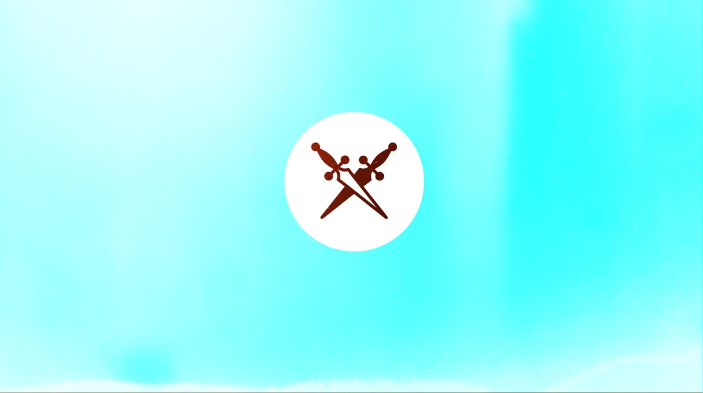
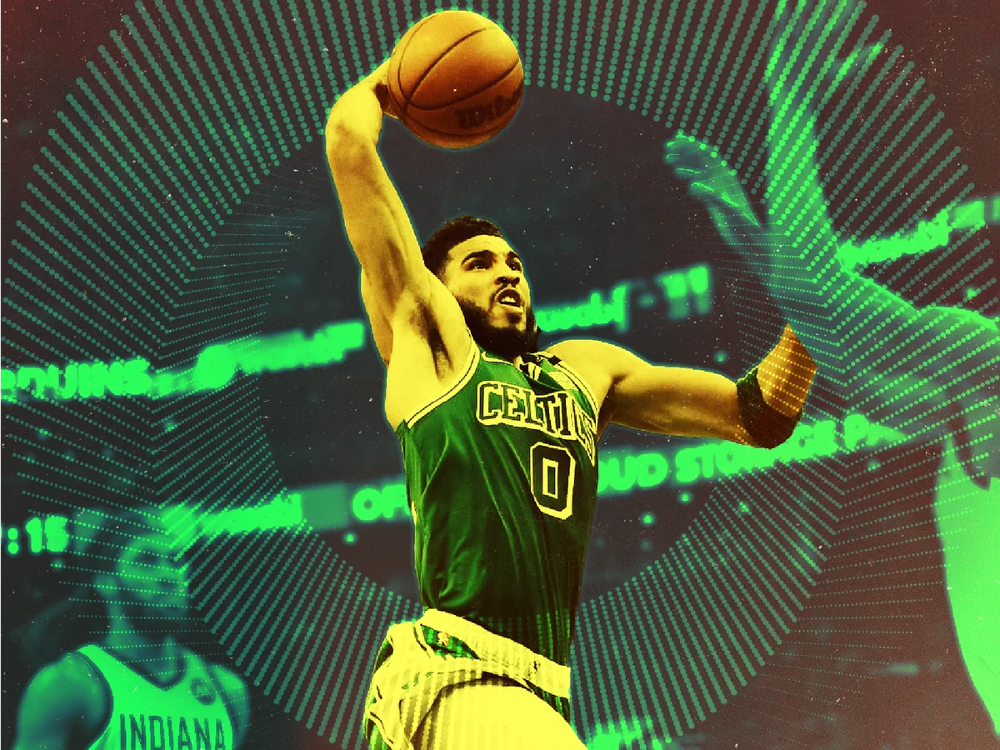
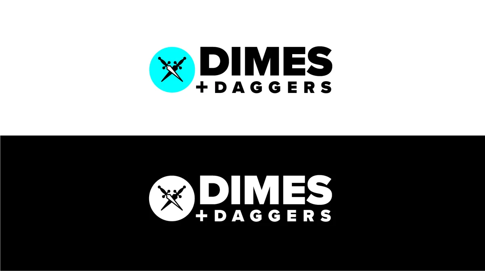
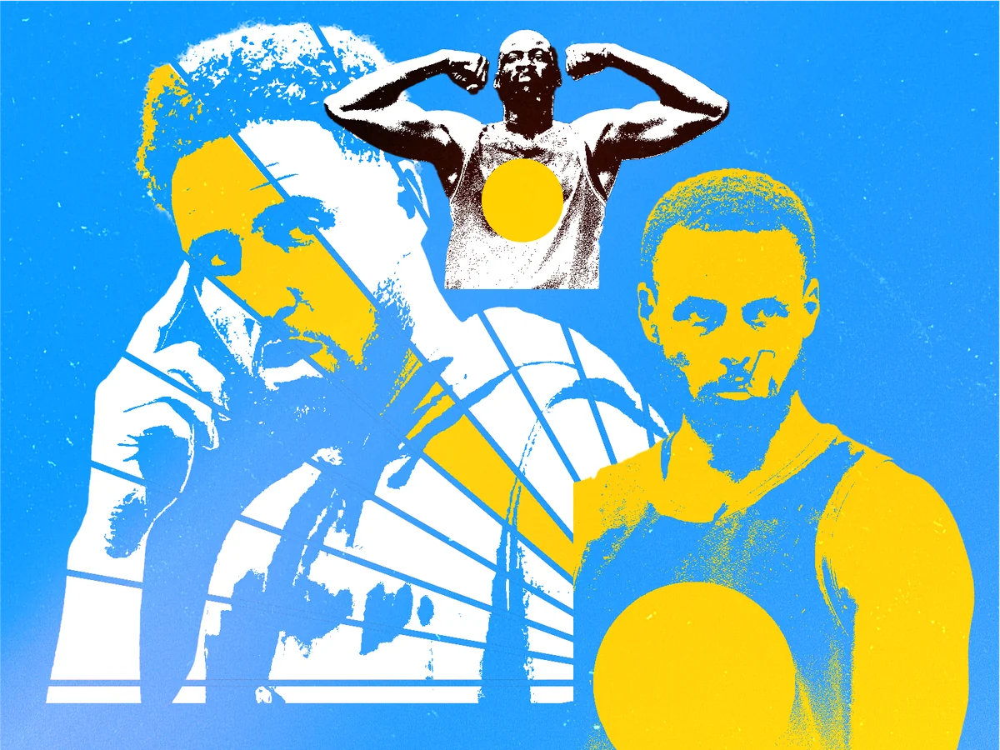
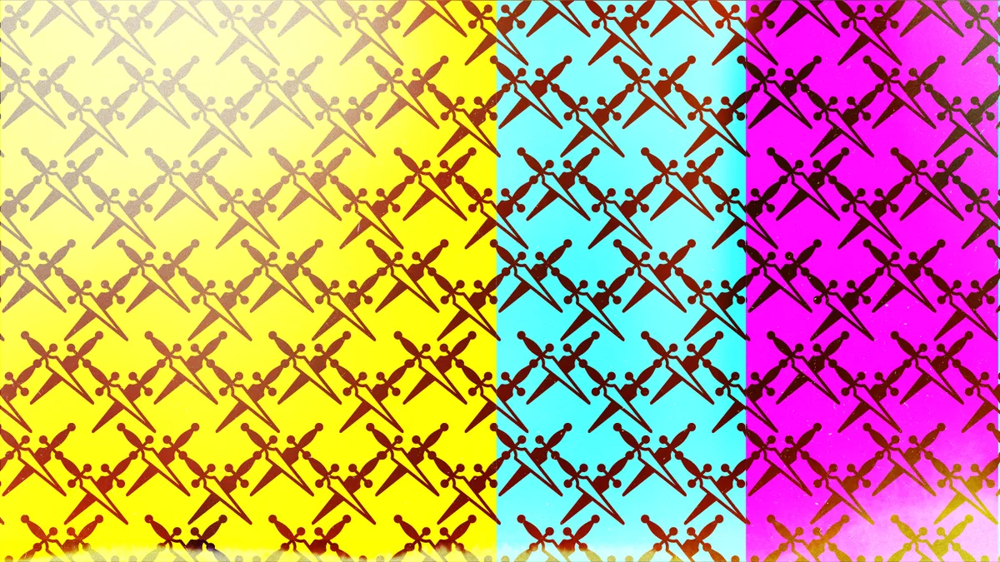
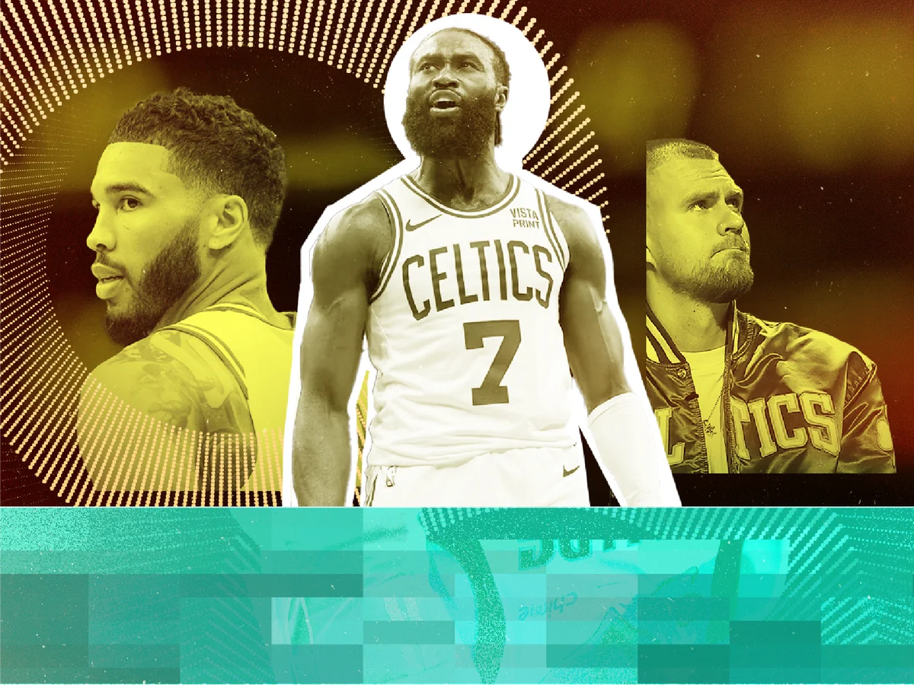
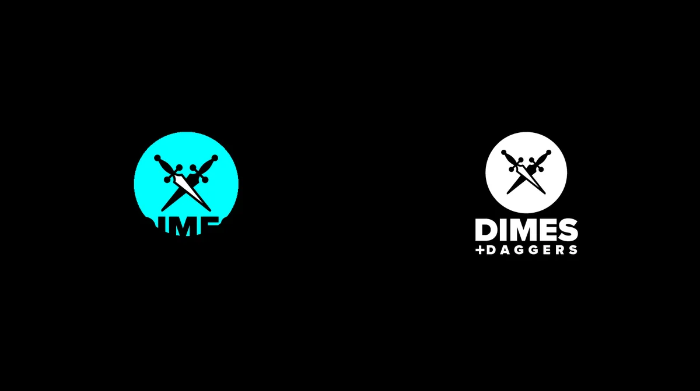
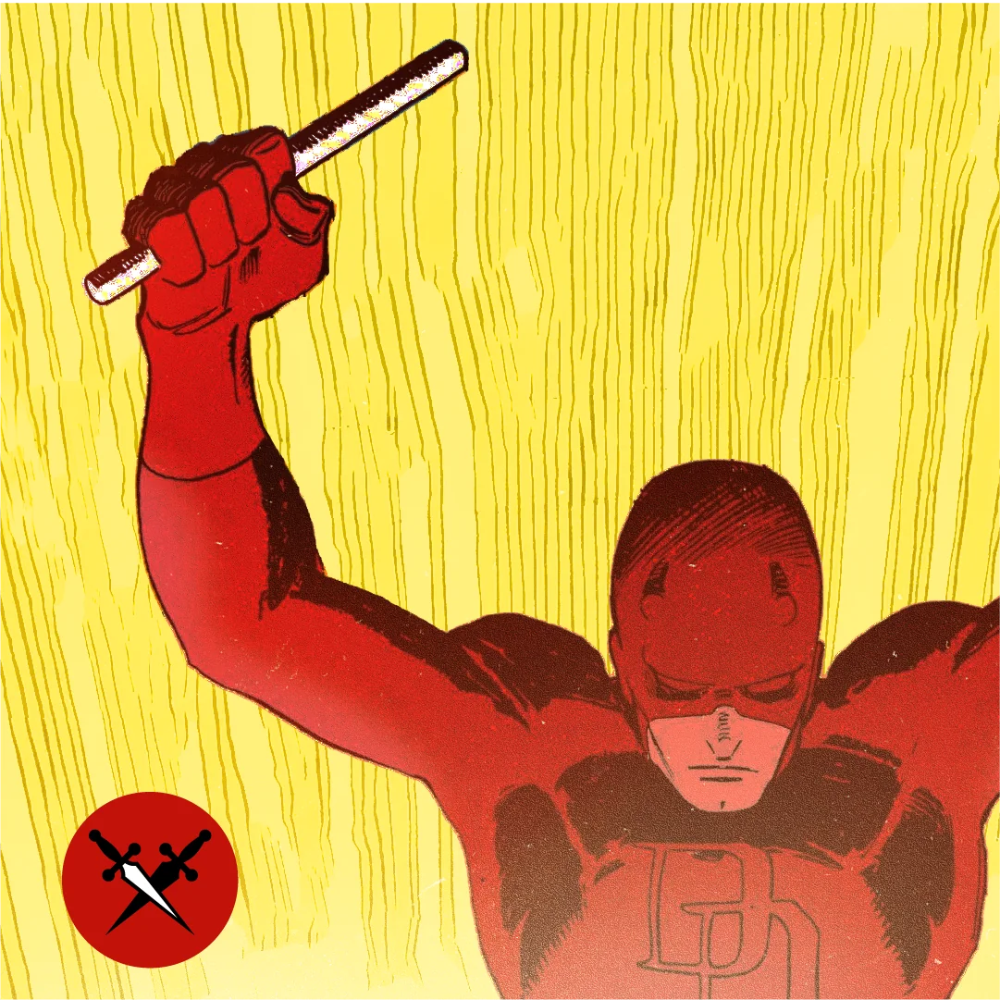

Dimes Branding

PROBLEM: A passion-project pop culture site—running only during the NBA Playoffs—needed a distinct brand identity that felt editorially credible and visually sharp.
SOLUTION: Developed a logo and brand direction inspired by the editorial precision of The Ringer, adapted for a small, remote creative team covering the NBA, comics, and pop culture.
ROLE: Creative Director



How We Did It
Built a brand from scratch
Defined the visual identity including logo, type, and color. The reference point was The Ringer's editorial sharpness, adapted for a scrappier, more personal voice that covered what we actually cared about.
Managed a remote creative team
Coordinated writers and designers working remotely across a compressed seasonal window. Established workflow rhythms that made the chaos manageable—and kept things fun.
Kept it tight and personal
The brief was never to look like a big publication. The goal was to look like the best version of a passion project—credible, sharp, and clearly made with care.

Impact
Created a fully realized brand for a self-funded, seasonal pop culture publication
Gave contributors a visual identity to rally around across multiple NBA Playoff seasons
Proved out a remote creative management model on a fast, compressed timeline


